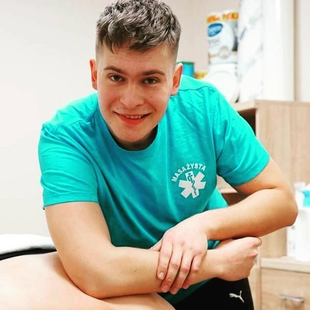
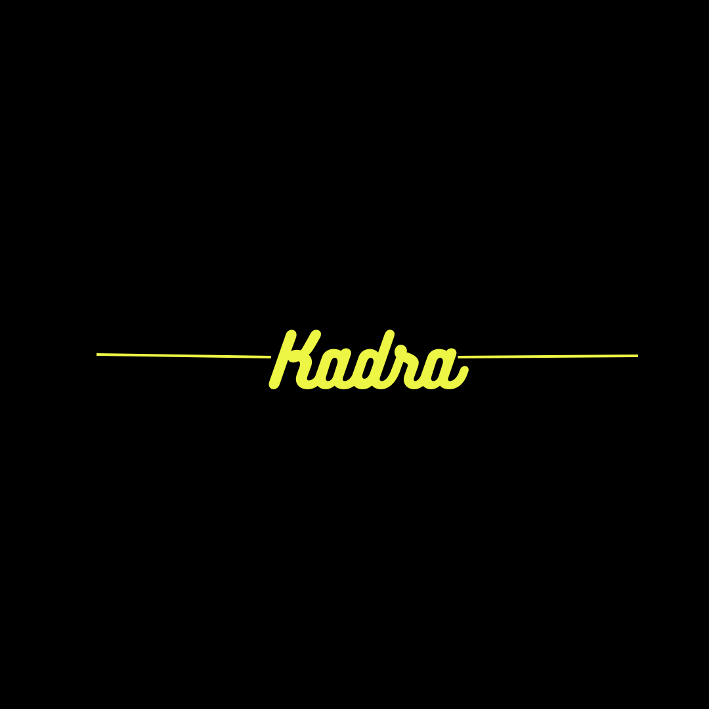
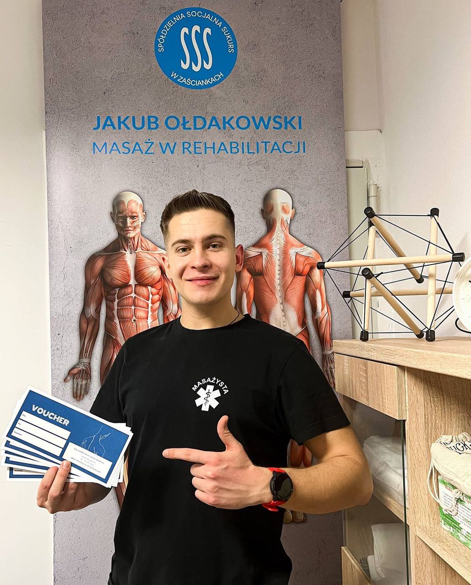
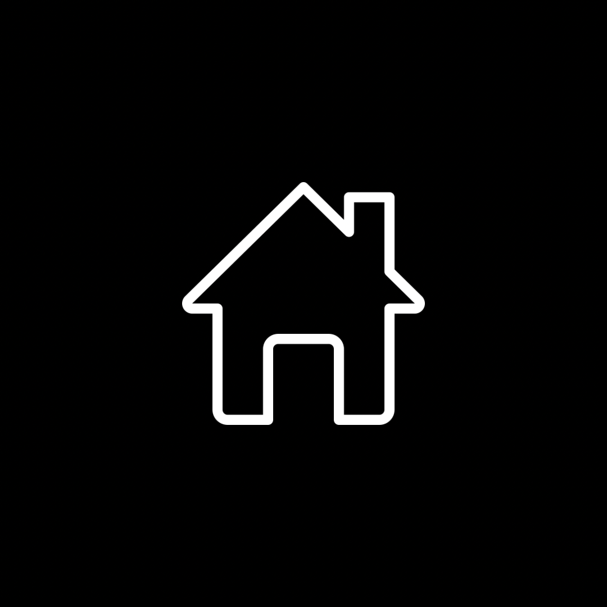

Z wykształcenia jestem masażystą oraz aktualnie studiuję fizjoterapię. Moja pasja do terapii manualnej i rehabilitacji skłoniła mnie do poszerzania swojej wiedzy i umiejętności poprzez ukończenie różnych kursów. Przeszedłem szereg szkoleń, w tym z zakresu tapingu, masażu tkanek głębokich oraz kinesiotapingu i obecnie otwieram swoją działaność jako masażysta/terapeuta!


Bestseller
masaż
oferta dla dwojga


Z wykształcenia jestem masażystą oraz aktualnie studiuję fizjoterapię. Moja pasja do terapii manualnej i rehabilitacji skłoniła mnie do poszerzania swojej wiedzy i umiejętności poprzez ukończenie różnych kursów. Przeszedłem szereg szkoleń, w tym z zakresu tapingu, masażu tkanek głębokich oraz kinesiotapingu i obecnie otwieram swoją działaność jako masażysta/terapeuta!

adres:
Ul.Słoneczna 17, 15-521 Zaścianki
godziny otwarcia:
poniedziałek-piątek 10:00-22:00
telefon:
515 025 434
prezesbadura@gmail.com
Regulamin korzystania z usług J.O.T:
- Zapisanie się na zabieg jest równoznaczne z akceptacją poniższego regulaminu, a także oświadczeniem, iż nie istnieją żadne przeciwwskazania do wykonania zabiegu,
- J.O.T może odmówić wykonania zabiegu jeśli istnieją przeciwwskazania zdrowotne do jego wykonania,
- J.O.T może odmówić wykonania zabiegu, lub go przerwać, jeśli zachowanie klienta jest niestosowne, bądź obraźliwe,
- Godzina umówionej wizyty, to godzina rozpoczęcia zabiegu, dlatego prosimy o przybycie kilka minut wcześniej,
- W przypadku spóźnienia klienta, czas zabiegu zostaje skrócony o ilość minut równą spóźnieniu.